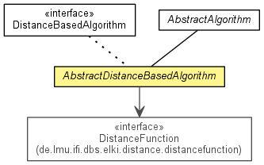

de.lmu.ifi.dbs.elki.algorithm
Class AbstractDistanceBasedAlgorithm<O,D extends Distance<D>,R extends Result>
java.lang.Object
 de.lmu.ifi.dbs.elki.algorithm.AbstractAlgorithm<R>
de.lmu.ifi.dbs.elki.algorithm.AbstractDistanceBasedAlgorithm<O,D,R>
de.lmu.ifi.dbs.elki.algorithm.AbstractAlgorithm<R>
de.lmu.ifi.dbs.elki.algorithm.AbstractDistanceBasedAlgorithm<O,D,R>
- Type Parameters:
O - the type of objects handled by this AlgorithmD - the type of Distance used by this AlgorithmR - the type of result to retrieve from this Algorithm
- All Implemented Interfaces:
- Algorithm, InspectionUtilFrequentlyScanned, Parameterizable
- Direct Known Subclasses:
- ABOD, AbstractDBOutlier, CTLuGLSBackwardSearchAlgorithm, CTLuRandomWalkEC, DBSCAN, DeLiClu, DistanceStatisticsWithClasses, EvaluateRankingQuality, INFLO, KNNDistanceOrder, KNNJoin, KNNOutlier, KNNWeightOutlier, LDOF, LOCI, MaterializeDistances, OPTICS, OPTICSOF, RankingQualityHistogram, SLINK
public abstract class AbstractDistanceBasedAlgorithm<O,D extends Distance<D>,R extends Result>
- extends AbstractAlgorithm<R>

Provides an abstract algorithm already setting the distance function.
| Methods inherited from class java.lang.Object |
clone, equals, finalize, getClass, hashCode, notify, notifyAll, toString, wait, wait, wait |
DISTANCE_FUNCTION_ID
public static final OptionID DISTANCE_FUNCTION_ID
- OptionID for
DISTANCE_FUNCTION_ID
distanceFunction
private DistanceFunction<? super O,D extends Distance<D>> distanceFunction
- Holds the instance of the distance function specified by
DISTANCE_FUNCTION_ID.
AbstractDistanceBasedAlgorithm
protected AbstractDistanceBasedAlgorithm(DistanceFunction<? super O,D> distanceFunction)
- Constructor.
- Parameters:
distanceFunction - Distance function
getDistanceFunction
public DistanceFunction<? super O,D> getDistanceFunction()
- Returns the distanceFunction.
- Returns:
- the distanceFunction